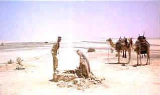

| Lawrence
of Arabia (SE) /A,B- |
| Columbia/1962/212/ANA 2.20 |
Countless specs of sand cover
the desert from end to end; try finding a single specific grain. That's like hunting for the faults
of Lawrence of Arabia. the brilliant epic vision realized with consummate skill by
methodically driven director David Lean.
 |
| A waterhole poisoned by hatred and
tradition. ©Columbia |
For the initiated, Lawrence of Arabia
chronicles the rise of a legendary desert warrior from the ranks of the British Army in Saudi
Arabia during World War I. T. E. Lawrence, swept from Lieutenant to Colonel on the winds of his
desert campaign against the Turks. The enigmatic character and his exciting adventures are revealed
with unique vision through the brilliant script of Michael Wilson and Robert Bolt and the
uncompromising vision of director Lean.
There are so many remarkable aspects to the sweeping Lawrence of Arabia.
In many ways, Lawrence is the story of a man you don't come to know. Nobody really comes to
know him. He barely knows himself. On a script level, Lawrence evolves so naturally, one
never questions the veracity of the depiction. The enigmatic nature of the character is thoroughly
fascinating.
Visually, Lawrence is one of the greatest. It's not just Freddie Young's
breathtakingly brilliant cinematography, but its director David Lean's combinations that burn Lawrence
onto your memory with the searing power of direct sunlight. Lean is like a great prizefighter
finding that moment of perfection in the ring. The left jabs set up the straight right, endless
body punches accumulate like so many grains of sand. There are many of those special moments in Lawrence.
The most classic image is Lawrence blowing out a match that turns to a magic desert sunrise. How
many editors have been inspired to find such a moment. The miraculous mirage as Sherif Ali's
introduction. Lawrence's return to the desert at the head of a troop of bounding camel riders
as the desert fills with the chant of "Awrence." Feisal's first glance of Lawrence
revealed through the bomb swept desert dust. The incredible invasion of Aqaba.
Can you separate the majesty of Maurice Jarre's score from indelible
images? Jarre captures the blowing sand of the desert in the resonant fanfare that represents
Lawrence, the jangling saddle bags that bounce in a camel's gait and excitement of battle, all with
thrilling chords.
David Lean is the real general of the desert, commanding stunning performances
across the board. There's ice in Peter O'Toole. His cold, somewhat off-center, depiction of
Lawrence is often amazing. Omar Sharif imbues Sherif Ali with a princely dignity. His watery eyes
reflect the various moods of the desert and the film. Anthony Quinn, the bigger than life Anthony
Quinn, is wonderfully cast as Auda abu Tayi, ferocious desert warrior. The fire of Auda emphasizes
the ice of Lawrence. Alec Guinness supplies an extraordinary intellect for his portrayal of Prince
Feisal. while Jack Hawkins represents another side of pragmatism in the role of General Allenby.
Veteran Claude Raines is given some excellent scenes as wily diplomat Dryden.
The special edition is packaged in a 2 DVD set. Disc one concludes at the film's
intermission. The second disc begins with the Entr'acte music. Well, almost: in fact, one must
first suffer through the Columbia logo and a new FBI warning, Not a happy intrusion on the flow of
the film.
The transfer is not up to standard for a film of this stature. Images against
the desert sky are consistently outlined with edge enhancement. True, Lawrence of Arabia has
more than its share of these difficult peak transition scenes, so more care should have been taken
in minimizing this artifact. There are several desert scenes in which the sky is broken by broad
white vertical bands down the center of the screen. Are they int he original elements or artifacts
of the transfer MPEG chain? At any rate, they are significantly intrusive, even disturbing the
perfection of the mirage sequence. The desert night shot which should provide a deep black blanket
highlighted by twinkling stars is washed out and grayish with flashing image. Overall, the image is
sharp and color saturation very goods. There are a number of scenes which play slightly soft and
some reds lean slight to orange. Contrast is strong and black fabrics achieve good density. I
thought I caught a couple of jumpy splices. The Dolby Digital 5:1 mix is okay. It seems to play at
lower than reference level. Dialogue is clear and the ambience of the desert is adequately
captured.
The heart of this special edition is the documentary cut together by Laurent
Bouzereau, which includes some behind the scenes looks at Lawrence's desert shoot and interviews
with cast members Anthony Quinn and Omar Sharif, as well as clips from a 1989 interview with David
Lean. Property master Eddie Fowlie shares some memorable Lawrence moments as well. Editor Ann
V. Coates and production designer John Box also add their insights of Lawrence. Assistant producer
Norman Spencer Choice details of the shoot are shared, such as the memorable moment when
Lawrence returns from the desert rescue and one of his servants races on camel to meet him, only to
run right past him and must circle around on his camel for the reunion. How about the quicksand as
told from the perspective of Eddie Fowlie. It's an entertaining addition to the great film
experience.
Steven Spielberg contributes a ten minute filmed interview discussing the
inspirational effect Lawrence of Arabia had on him as a young man growing up in the desert
community of Phoenix, Arizona.
Unhappily, restorationist Robert A. Harris was not consulted for input on this
DVD transfer. Lest we forget, Lawrence of Arabia exists on film in its definitive form
through the efforts of Harris's Lean-like perfectionism. Thanks, Robert.
|
|
|
|

Selections from the Feature Archive
include articles on Akira Kurosawa, Frank
Darabont, Blonde Bimbos, Hollywood Street Gangs, or Vietnam: The
Hollywood Pariah, and many more....
Robert
A. Harris

Tilting at Hollywood
He's part of the dynamic duo that restored Lawrence
of Arabia, Spartacus, My Fair Lady and Vertigo. Harris rides a white horse into the for the cause
of preserving our film legacy. Click on the image to read more.

The
Movie Poster Archive include extensive poster images from the films of stars like Susan Hayward,
Kirk Douglas, Katharine Hepburn and many more. Our featured star is Spencer Tracy.


DVD links, information about Web specials, news, Site reviews.

Information on film sound in theaters and home theaters. Lots of helpful information provided in a
handsome interface.

Looking for information about widescreen movies and hardware. The Widescreen Movie Center
is the place to go.

The National Film Preservation Foundation (NFPF) is the nonprofit organization created by the U.S. Congress to save
America's film heritage.

Home of The American Film Institute.
 Brad Lang continues to add more interesting material to the extensive
collection at Classic
Movies. Everything from actors and actress to your favorite directors is
linked at the site. Brad Lang continues to add more interesting material to the extensive
collection at Classic
Movies. Everything from actors and actress to your favorite directors is
linked at the site.

Films of the Golden Age is
a showcase for special feature articles on film
people and Hollywood history, all illustrated with beautiful photographs and classic movie art.

The home of John Tisch's invaluable Poster Price Almanac. Every serious poster collector
uses the Almanac as a reference.

Click on the DVD MIA symbol for
profiles of DVDs missing in action.
Add films to the DVD MIA Master List by filling out
a simple form. Click Here |